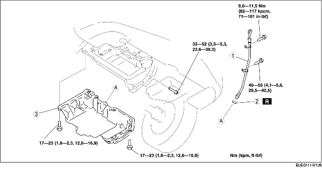

1. Demontera batterikåpan. (Se DEMONTERING/MONTERING AV BATTERIET [LF].)
2. Lossa batteriets minuskabel.
3. Demontera den undre kåpan och stänkskyddet som en enda enhet.
4. Ta bort höger framhjul.
5. Tappa ur motoroljan. (Se BYTE AV MOTOROLJA [LF].)
6. Ta bort tändstiftskyddet. (Se DEMONTERING/MONTERING AV TÄNDSTIFTSKYDD [LF].)
7. Demontera drivremmen. (Se BYTE AV DRIVREM [LF].)
8. Ställ undan kylvätskans reservtank så den inte är i vägen.
9. Ta bort luftkonditioneringskompressorn medan rören fortfarande sitter fast. (Se DEMONTERING/MONTERING AV LUFTKONDITIONERINGSKOMPRESSOR [LF].)
10. Ta loss tändspolen. (Se DEMONTERING/MONTERING AV TÄNDSPOLE [LF].)
11. Placera gasvajerkonsolen så att det är ur vägen.
12. Demontera vevaxellägesgivaren (CKP). (Se DEMONTERING/MONTERING AV CKP-GIVAREN (VEVAXELPOSITION) [LF].)
13. Demontera motorns främre skydd. (Se DEMONTERING/MONTERING AV KAMKEDJA [LF].)
14. Demontera i den ordning som anges i tabellen.
15. Montera i omvänd ordning mot demonteringen.
16. Fyll på motorn med olja av angiven typ och mängd. (Se BYTE AV MOTOROLJA [LF].)
17. Starta motorn och kontrollera att det inte läcker någon olja.
18. Kontrollera oljenivån. (Se KONTROLL AV OLJENIVÅN I MOTORN [LF].)
19. Kontrollera tändförställningen och tomgångsvarvtalet. (Se MOTORINSTÄLLNING [LF].)

.
1. Lossa oljetråget med hjälp av separationsverktyget.
1. Rengör huset och oljetråget och ta bort all olja, smuts och annat främmande material.
2. Om du återanvänder oljetrågets monteringsbultar, rengör dem från allt gammalt tätningsmedel.
3. Använd en fyrkantig linjal för att placera oljetråget och motorblockets kopplingssida på motorns främre skydd i linje.
4. Stryk silikontätningsmedel utefter hela insidan av oljetrågets bulthål enligt bilden.
5. Dra åt bultarna i den ordning bilden visar.